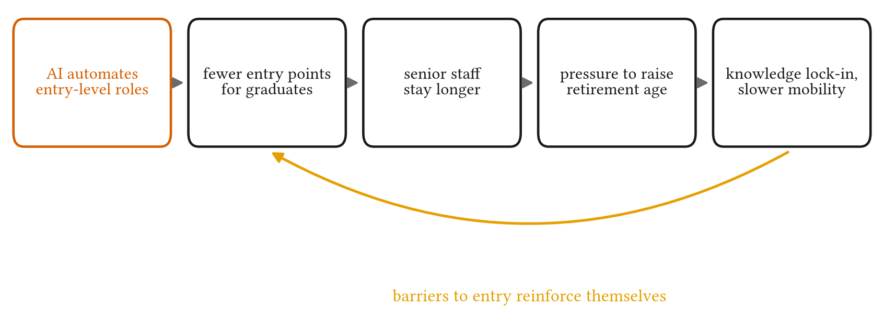
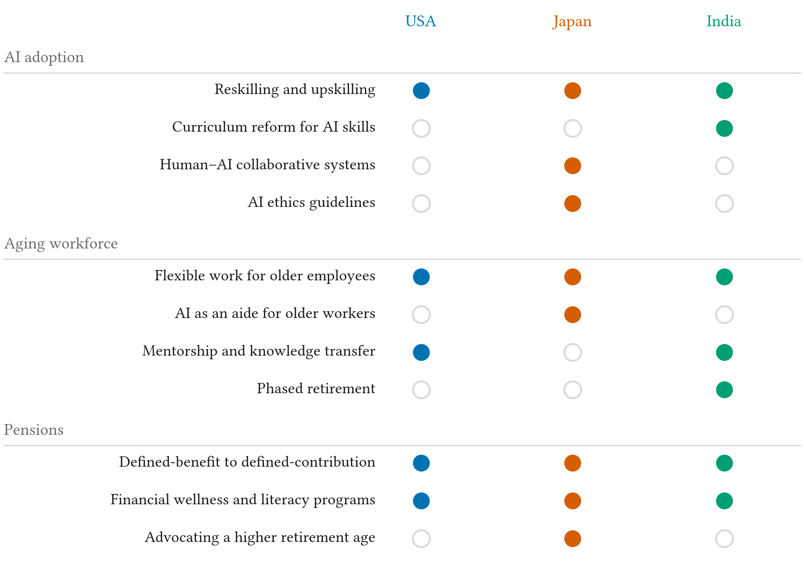

AI-induced Labor Market Shifts and Aging Workforce Dynamics: A Cross-national Study of Corporate Strategic Responses in Japan, USA, and India
Abstract
Advanced artificial intelligence is transforming labor markets by automating a growing range of job roles and, in turn, disrupting traditional career advancement. Rapid AI-driven automation limits entry-level opportunities and so curbs the upward mobility of workers with little or no experience. This has a cascading effect on older, more senior employees, whose accumulated responsibilities and experience lead them to advocate for later retirement in order to sustain their companies through the transition. By comparing the strategic responses of corporations in countries at different stages of AI adoption, namely Japan, the United States and India, this study examines how companies respond to this interplay, and offers insights for equitable and sustainable AI integration and for the policy challenges of workforce aging and retirement.
When the First Rung Disappears
Automation used to be described as a force that transforms jobs rather than eliminating them: machines take over tasks, and people move on to work that needs judgement and creativity. That view rested on a distinction between two kinds of automation:
- Routine automation takes over repetitive, predictable work, such as assembly lines or data entry.
- Cognitive automation reaches tasks that need decisions, problem solving and learning, such as customer service chatbots, diagnostic tools in healthcare, and parts of finance and journalism.
As AI systems begin to match people on cognitive tasks, the old reassurance becomes harder to defend. In technology firms the first casualties are the tasks that new graduates have always started with: basic coding, software testing and data administration. Those tasks were not only jobs. They were how a career began, the place where people gained the experience, skills and leadership record needed to move up. Meanwhile, the new roles AI creates, in model development, system integration and AI oversight, demand exactly the experience that new graduates no longer have a way to acquire.

The argument continues from there. With fewer newcomers arriving, experienced employees consolidate their positions and stay longer, and companies face pressure to improve pensions and raise the retirement age. Longer tenures lead to knowledge lock-in: expertise stays with a fixed senior group, junior staff move up more slowly, and the barrier to entry grows. Older workers are not the problem in this story. Given access to training, they adapt to new technology well. The tension is structural, between keeping experience and making room for new talent.
Fifteen Companies, Three Countries
We use a multiple-case-study design built on secondary sources. In each country we study five leading, technology-intensive companies. Each firm operates globally, but its strategy stays anchored in its home country. The three countries sit at different points on two axes, AI adoption and demographic aging, which makes them a natural comparison.
| Country | Companies | Why it is a useful case |
|---|---|---|
| United States | Apple, Microsoft, Amazon, Google, Facebook | At the frontier of AI adoption, with an aging workforce |
| Japan | Sony, Toyota, Panasonic, Nintendo, SoftBank | A “super-aged” society integrating AI into tech and manufacturing |
| India | TCS, Infosys, Wipro, HCL Technologies, Tech Mahindra | An IT-services economy with a young population |
For each country we examine three things: how firms respond to AI-driven change in the labor market, how they manage an aging workforce, and how pension policy and corporate benefits are changing.
Three Case Studies
Figures below are the third-party statistics the paper cites, with their sources.
United States: the frontier, and the pension shift
The leading U.S. technology firms have used AI to raise efficiency, and in doing so have reduced demand for traditional entry-level technical roles. The skills expected of new hires are shifting from conventional programming to working with AI tools, data analytics and machine learning. Firms are responding with reskilling and upskilling, and the paper argues that computer science education has to change with them. For older employees, firms offer flexible work, ergonomic changes, wellness programmes and tools for intergenerational mentoring. On pensions, defined-benefit plans are giving way to defined-contribution plans such as the 401(k), which move investment risk from the employer to the employee.
Japan: AI in support of an aging workforce
Japanese firms combine reskilling with human–AI collaborative systems and give unusual weight to AI ethics guidelines. With more than 28% of the population aged 65 or over, they also deploy AI as an aide to older workers, offer part-time, remote and flexible schedules, and run retraining programmes aimed at older employees. They promote financial literacy, back defined-contribution plans similar to the 401(k), and advocate for public policy that raises the statutory retirement age.
India: preparing early
India’s IT-services firms are adopting machine learning, NLP and AI automation quickly, while investing in upskilling and pushing for AI in academic curricula. With a young population, aging is not yet pressing, but firms are preparing: flexible work, phased retirement, lifelong learning, and mentorship roles that pass older employees’ experience to younger ones. Pensions are moving towards defined-contribution plans, led by the voluntary National Pension Scheme.
Side by side

Where the Countries Converge
We observe that the three countries, despite different demographics and stages of AI adoption, converge on the same core responses:
- Pensions move from defined benefit to defined contribution. Employees now carry the investment risk, which makes their retirement outcome depend on their own decisions.
- Firms invest in financial literacy. Because the new plans demand more financial knowledge, employers in all three countries are expanding financial wellness programmes.
- Older workers become trainers and mentors. Rather than staying only in management, experienced employees pass on knowledge, which works against lock-in and supports intergenerational collaboration.
Where they differ is just as clear. Japan, the oldest of the three, is the only one whose firms advocate raising the statutory retirement age and use AI specifically to support older workers. India, the youngest, is preparing in advance with phased retirement and lifelong learning. The broad direction of policy is shared, but how well it works depends on each country’s demographic and economic situation.
The Mechanism, in Equations
The paper makes its argument in words. The video below writes it down as a simple, illustrative model, with toy numbers rather than estimates: the career ladder as stocks and flows, what happens to promotion chances when hiring falls and retirement comes later, and why a defined-contribution pension moves investment risk to the employee.
Limitations
The study relies on existing secondary sources, so its findings are only as complete, accurate and current as those sources. It compares countries at a broad level and does not explore variation within them, across sectors, labor market structures or regions. It focuses on policy and corporate strategy, not on how individual employees respond to these changes or experience them. Finally, the wider social, economic and cultural context that shapes pension policy is only partly captured. Future work could address each of these gaps, for example with firm-level data, surveys of employees, or within-country comparisons.
BibTeX
@misc{tiku2023ai,
title = {AI-induced Labor Market Shifts and Aging Workforce Dynamics: A Cross-national Study of Corporate Strategic Responses in Japan, USA, and India},
author = {Tiku, Sarvesh},
year = {2023},
howpublished = {SSRN preprint 4535534},
url = {https://ssrn.com/abstract=4535534}
}